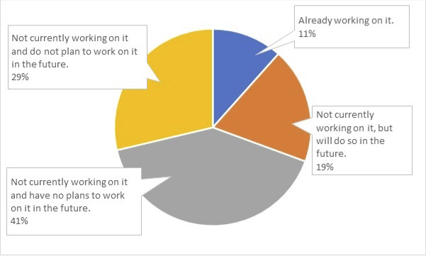

Japan's Approach to Achieving the SDGs
01/20 2023
Author: Mari Kosaka
(1) Strengthening implementation of the SDGs by small and medium-sized enterprises (SMEs)
About 13 organizations are selected each year – one award is given by the Prime Minister, two each by the Chief Cabinet Secretary and the Minister of Foreign Affairs, in addition to eight special awards – and all types of actors have been selected, including companies, NGOs, municipalities, educational institutions, and the media, among others. Of the 64 selections made over the past 5 years, 27 were companies, and about 60% of these were SMEs. In general, it is difficult to say that SMEs in Japan are making progress in their efforts to implement the Goals. For instance, a survey of 2,000 selected SMEs in Japan showed that only 11% of them are currently implementing the SDGs (Organization for Small & Medium Enterprises and Regional Innovation JAPAN 2022) (see Fig. 1). With such limited efforts by these organizations, one of the government's intentions for the award system is to spotlight numerous SMEs and set them up as role models, so that other SMEs will recognize that they too are subject to SDG implementation and follow suit.

(2) From raising awareness to transformation
Based on advice from the SDGs Promotion Roundtable, there is a procedure by which the SDGs Promotion Headquarters, headed by the Prime Minister, selects the winning organization. What is most interesting is the evaluation criteria for the selection. From 2018 to 2021, the criteria were universality, inclusiveness, participation, transparency, and integration, which are concepts underlying the 2030 Agenda. From 2022, however, two additional criteria were added to these five: transformation and solidarity/behavior change. In the early stages when this award system was launched, there were some organizations selected that (only) contributed to raising awareness of the SDGs, but in the last few years awarded organizations focused on actually putting them into action and making the results public. The addition of these new criteria at this stage is a clear indication by the government that it is already not enough to simply implement actions consistent with the SDGs, but that organizations’ activities should be creating transformative impact.
(3)Activities not necessarily triggered by the adoption of the Global Goals in 2015
Looking at the content of the activities among the selected organizations reveals that they were not necessarily started in response to the adoption of the SDGs; in some cases, overseas activities that have been conducted continuously since the 1980s were evaluated. In other words, the government is not emphasizing the promotion of the Global Goals themselves, which were adopted in 2015, but rather attempting to promote the areas set forth within them.
Reference:
Organization for Small & Medium Enterprises and Regional Innovation JAPAN (2022) Survey on SDGs Promotion by Small and Medium Enterprises: Questionnaire Survey Report. (in Japanese, Accessed: 11 January 2023).